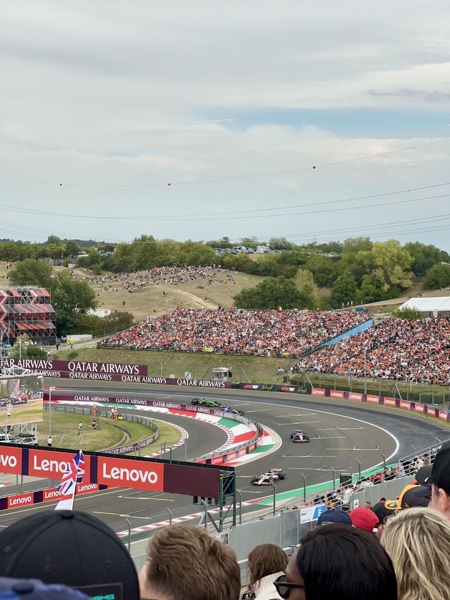

Hungaroring

Technical Details
Location: Mogyoród, Hungary
Length: 4.381 km
Laps: 70
First GP: 1986
Curiosities
The Hungaroring is a tight and twisty circuit often compared to a permanent street track. It debuted in 1986 as the first F1 race behind the Iron Curtain. Overtaking is difficult, making qualifying and strategy crucial. The circuit has produced many surprise winners and is often affected by hot weather conditions.